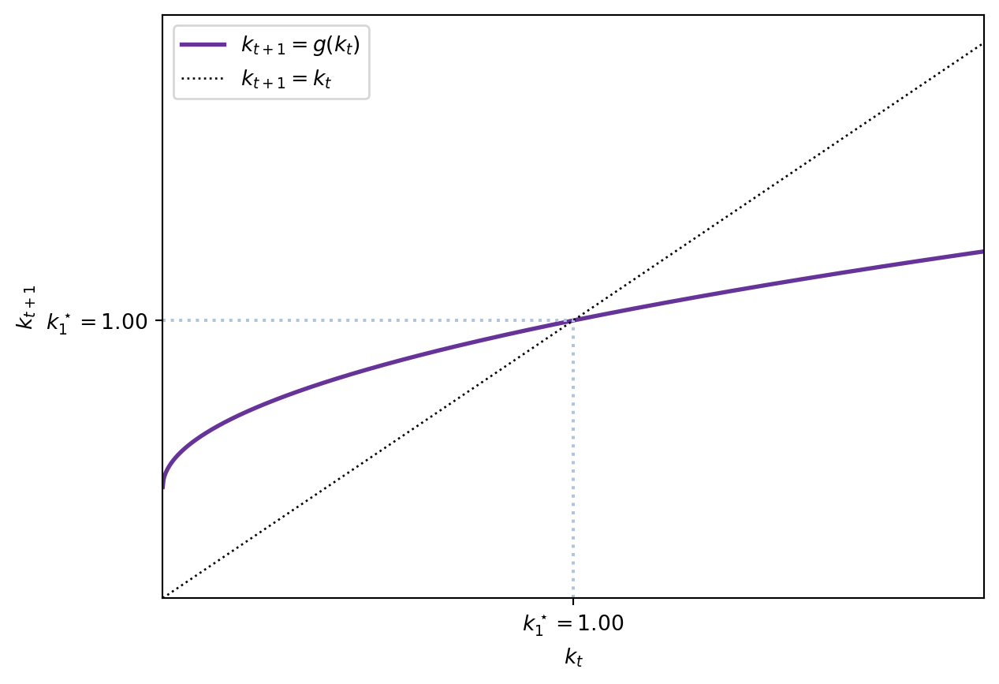

2 The OLG model
2.1 Introduction
Based on Croix and Michel (2009).
We have studied the Ramsey model, which predicts that the path derived from the competitive equilibrium is optimal. One of the main features of this model is that agents have an infinite horizon: they live forever and optimise considering an infinite horizon.
The overlapping generations model changes this hypothesis and focuses on the life-cycle: agents make decisions regarding how to consume, and how much to save for retirement. This is, the OLG model assumes that agents work until some age, and then retire.1 A focus of the OLG model is the intergenerational redistribution, allowing to study:
- social security,
- education policies and
- public debt.
The main departure with respect to the Ramsey model is that in OLG, agents are heterogeneous. Individuals live for two periods of time, and then die. In the first period, they are young and work. When old, they retire and live from savings. Hence, at any point in time, two types of agents with different budget constraints exist: young and adults.2
As we shall see, in this model the competitive path may not be optimal. Consequently, there may be instances in which the utility of all individuals can be increased. Therefore, the OLG model opens the door to government intervention, to reallocate consumption and savings efficiently. The OLG framework also permits the existence of bubbles and fluctuations.
A basic reference for this model is Diamond (1965) Numerical exercises Sample exam
2.2 Preliminaries
In this model, time is discrete and extends from \(t=0, 1, \ldots, \infty.\) Individuals make decisions at points in time. We shall have initial conditions detailing the state of the economy at \(t=0.\)
2.2.1 Individuals live for two periods
The main difference with respect to the Ramsey model is that in the OLG model, individuals live for two periods. Note: this means that, at every point in time, two generations are alive and overlap.
This is relevant: the economy goes on forever but individuals only operate during some periods. Hence, there will be infinite two-period-lived generations. In particular, at \(t=0\), we will have a young and an adult generation. This adult generation will die at the end of \(t=1\), the young generation will become adults and have children: the new young generation of \(t=2.\) Hence, we can represent the generations diagrammatically —in brackets I have denoted the year in which each generation was born.
| \(t=0\) | \(t=1\) | \(t=2\) | \(t=3\) | \(t=4\) | \(t=5\) |
|---|---|---|---|---|---|
| Old (t=-1) | Die | ||||
| Young(t=0) | Old (t=0) | Die | |||
| Young(t=1) | Old (t=1) | Die | |||
| Young(t=2) | Old (t=2) | Die | |||
| Young(t=3) | Old (t=3) | Die | |||
| Young(t=4) | Old (t=4) | ||||
| Young(t=5) |
To simplify the model, we assume that each adult born in \(t-1\) has \(n>-1\) children. Note: we assume the number of children to be constant.
More complex set-ups include endogenous fertility.
These are the young population at time \(t\) Therefore, the total population \(N\) at time \(t\) is composed of adults and young people.
\[ N_{t} = \underbrace{N_{t-1}}_{\mathrm{Adults}} + \underbrace{N_{t-1}n}_{\mathrm{Youngs}} = N_{t-1}(1+n). \]
The total population at any time \(t\) is:
\[ N_{t} = N_{0}(1+n)^{t}. \]
2.3 Assumptions
2.3.1 Firms
We assume that a large number of identical firms populate the economy. Firms produce a single, homogeneous good using labour and capital. The production function \(F(K,L)\) has the following properties:
Assumption OLG 1: The production function satisfies the following properties:
- OLG 1.1 \(F(K, L)\) is continuous and defined on \([0,+\infty)^{2},\)
- OLG 1.2 \(F(K, L)\) has continuous derivatives of every required order on \((0,+\infty)^2,\)
- OLG 1.3 The production function is strictly increasing in both arguments: \(F_{i}(K, L) > 0\),
- OLG 1.4 The production function is strictly concave: \[\begin{align*} F_{ii}(K, L) & < 0 \\ F_{ii}(K,L) & F_{jj}(K, L) - F_{ij}(K, L)F_{ji}(K, L)>0 \end{align*}\]
- OLG 1.5 \(F(K, L)\) is homogeneous of degree one.
- OLG 1.6 \(F(K, L)\) satisfies the Inada conditions:
\[\begin{align*} \lim_{K \rightarrow 0} F^\prime_{K}(K, L) &= \lim_{L \rightarrow 0} F^\prime_{L}(K, L) = +\infty \\ \lim_{K \rightarrow +\infty} F^\prime_{K}(K, L) &= \lim_{L \rightarrow +\infty} F^\prime_{L}(K, L) = 0. \end{align*}\]
Note: Assumption OLG 1.4 implies that the Hessian matrix of the production function is negative definite, hence the function is strictly concave.
Firms maximise real profits. Since there are many firms competing, in equilibrium they make exactly zero profits. Moreover, in equilibrium factors are paid their marginal productivity. Since the production function \(F\) is homogeneous of degree, we can write it in intensive terms:
\[ f(k) \equiv F\left(\frac{K}{L},1\right), \quad k \equiv \frac{K}{L}. \tag{2.1}\]
Because markets are competitive, capital earns its marginal product \(\partial F(K,L)/ \partial K\) or, equivalently, \(f^{\prime}(k)\) in intensive terms. Thus, the real interest rate at time \(t\) is:
\[ r_{t} = f^{\prime}(k_{t}). \tag{2.2}\]
The marginal product of labour is given by \(\partial F(K,L)/\partial L.\) In intensive terms, it is equal to:
\[ w_{t} = f(k) - f^{\prime}(k) k. \tag{2.3}\]
2.3.2 Households
Individuals live for two periods. As before, we assume perfect foresight for individuals. Assumption OLG 2 Individuals have perfect foresight.
When young, they are endowed with one unit of labour that they supply inestastically. Assumption OLG 3 Individuals supply one unit of labour inelastically when young. They receive the ongoing wage rate \(w_{t}\) and allocate this income between:
- current consumption \(c_{t}\),
- savings \(s_{t}\) that are invested in the firms.
Therefore, the budget constraint of a young individual in period \(t\) is:
\[ w_{t} = c_{t} + s_{t}. \]
Once an individual reaches old age the next period, he consumes his savings (plus the interest rate received), reproduces —exogenous fertility at rate \(n\)— and dies. Old people do not care about anything happening after death. Therefore, an agent has one unique choice:
- consumption when adult, \(d_{t+1}.\)
The budget constraint for this period is:
\[ s_{t}(1 - \delta + r_{t+1}) = d_{t+1}. \]
with \(\delta \in (0,1)\) being the capital depreciation rate.
Hence, an individual faces two budget constraints. However, we can collapse both into a unique intertemporal budget constraint.
2.3.2.1 The intertemporal budget constraint
In the economy, we have consumption as the numeraire. It is more convenient for us to combine the two budget constraints corresponding to young and old ages into one single constraint. Starting from
\[ \begin{cases} w_{t} = c_{t} + s_{t} \\ d_{t+1} = s_{t}(1 - \delta + r_{t+1}) = s_{t} R_{t+1} \end{cases} \tag{2.4}\]
where \(R_{t} \equiv 1 - \delta + r_{t+1}\) represents the return on savings, isolate \(s_{t}\) in the second equation and plug it in the first one:
\[ w_{t} = c_{t} + \frac{d_{t+1}}{R_{t+1}}. \tag{2.5}\]
The intertemporal budget constraint indicates that the total present value of income (\(w_{t}\), the only source of income) equals the total present value of expenditures. The present value of consumption when old \(d_{t+1}\) is discounted using the interest rate \(R_{t+1}.\)
It is clear that savings, as usual, will be a function of wages \(w\) and interests \(R.\) So will consumption at all periods of time.
2.3.2.2 Utility function
We suppose that the life-cycle utility function is additively separable:
\[ U(c,d) = u( c ) + \beta u(d),\, \beta \in(0,1) \tag{2.6}\]
where \(\beta \in (0,1)\) is the psychological discount factor. We assume that \(u( c )\) has the properties
Assumption OLG 4
- OLG 4.1 \(u^{\prime}( c ) > 0,\)
- OLG 4.2 \(u^{\prime \prime} ( c ) < 0,\)
- OLG 4.3 \(\lim_{c \rightarrow 0} u^{\prime}( c) = +\infty.\)
The last assumption \(\lim_{c \rightarrow 0} u^{\prime}( c ) = +\infty\) implies that an individual will always have a positive consumption —as long as he has enough income to finance it.
Another important implication of the choice of the utility formulation is that \(c\) and \(d\) are normal goods: the demand is not decreasing in wealth. It follows from additive separability and concavity.
2.3.3 The behaviour of individuals
At time \(t\), young individuals receive their wages, consume and save while maximising the utility function.
\[ \begin{aligned} & \max u(c_{t}) + \beta u(d_{t+1}) \\ & \mathrm{s.t.} \quad w_{t} = c_{t} + s_{t} \\ & \phantom{s.t.} \quad d_{t+1} = R_{t+1}s_{t} \\ & \phantom{s.t.} \quad c_{t} \geq 0, d_{t+1} \geq 0. \end{aligned} \tag{2.7}\]
We have two possibilities to solve this problem:
2.3.3.1 Substitution
First, we can substitute \(c_{t}\) and \(d_{t+1}\) in the utility function, leading to:
\[ u(w_{t} - s_{t}) + \beta u(R_{t+1}s_{t}). \]
This function is strictly concave with respect to \(s_{t}\) because of our assumptions. The solution is the savings function:
\[ s_{t} = s(w_{t}, R_{t+1}). \]
The solution is interior as a consequence of the assumptions, and it is characterised by the first-order condition:
\[ u^{\prime}(w_{t} - s_{t}) = \beta R_{t+1} u^{\prime}(R_{t+1}s_{t}). \tag{2.8}\]
2.3.3.2 Lagrangian
Instead, we can use the intertemporal budget constraint and build the Lagrangian:
\[ \mathcal{L} = u(c_{t}) + \beta u(d_{t+1}) + \lambda_{t}(w_{t} - c_{t} - \frac{d_{t+1}}{R_{t+1}}). \]
The first order conditions imply that:
\[ u^{\prime}(c_{t}) = \lambda_{t}, \quad \beta u^{\prime}(d_{t+1}) = \frac{\lambda_{t}}{R_{t+1}}. \]
Combining both, we obtain Equation 2.8 again: \[ u^{\prime}(c_{t}) = \beta R_{t+1} u^\prime (d_{t+1}). \]
2.4 Intertemporal elasticity of substitution
The intertemporal elasticity of substitution is defined as:
\[ \epsilon_{d_{t+1}, c_{t}} = \frac{ \partial \left( \frac{d_{t+1}}{c_{t}} \right)}{\partial R_{t+1}} \frac{ R_{t+1}}{\left( \frac{d_{t+1}}{c_{t}} \right)}. \tag{2.9}\]
From the Euler equation we have \(\frac{u^{\prime}(c_{t})}{u^{\prime}(d_{t+1})} = \beta R_{t+1}.\) So, consumption when old \(d_{t+1}\) is going to be proportional to consumption when young \(c_{t}.\)
Let \(d_{t+1} = x_{t+1} c_{t}.\) Then, the intertemporal elasticity of substitution becomes:
\[ \epsilon_{d_{t+1}, c_{t}} = \frac{ \partial x_{t+1}}{\partial R_{t+1}} \frac{ R_{t+1}}{x_{t+1}}. \]
We can compute it using the Euler equation \(u^\prime(c_{t}) = \beta R_{t+1} u^\prime(x_{t+1}c_t).\) In fact, totally differentiating on both sides yields
\[ 0 = \beta u^\prime(x_{t+1}c_t)\mathrm{d}R_{t+1} + \beta R_{t+1}u^{\prime \prime}(x_{t+1}c_t) c_{t} \mathrm{d}x_{t+1}. \]
Hence,
\[ \frac{\mathrm{d}x_{t+1}}{\mathrm{d}R_{t+1}} = - \frac{u^\prime(x_{t+1}c_{t})}{R_{t+1}u^{\prime \prime}(x_{t+1}c_t)c_{t}} = - \frac{u^\prime (d_{t+1})}{R_{t+1}u^{\prime \prime}(d_{t+1})c_{t}}. \]
The intertemporal elasticity of substitution is then given by:
\[ \epsilon_{d_{t+1}, c_{t}} = \frac{\mathrm{d}x_{t+1}}{\mathrm{d}R_{t+1}}\frac{R_{t+1}}{x_{t+1}} = - \frac{u^\prime (d_{t+1})}{R_{t+1}u^{\prime \prime}(d_{t+1})c_{t}}\frac{R_{t+1}}{\underbrace{x_{t+1}}_{\frac{d_{t+1}}{c_{t}}}} = - \frac{u^\prime(d_{t+1})}{u^{\prime \prime}(d_{t+1}) d_{t+1}}. \]
Note: the intertemporal elasticity of substitution is equal to the inverse of the coefficient of relative risk aversion. Risk averse individuals do not want large changes in consumption, so they have a large risk aversion and are not willing to trade off future and present consumption. Conversely, risk neutral individuals do not mind abrupt changes in consumption, so they are willing to trade off future and present consumption.
Hence, in this model, the intertemporal elasticity of substitution coincides with the inverse of the coefficient of relative risk aversion. Note: If you read Croix and Michel (2009, 12) , they take a different approach and also refuse to use the concept or risk aversion: the model does not feature risk.
2.4.1 CIES example
We illustrate the previous concept using a constant intertemporal elasticity of substitution utility function:
\[ u( c ) = \frac{c^{1-\frac{1}{\sigma}}}{1-\frac{1}{\sigma}}. \]
In this case, we have the following Euler condition:
\[ u^{\prime}(c_{t}) = \beta R_{t+1} u^{\prime}(d_{t+1}) \implies \frac{d_{t+1}}{c_{t}} = \left( \beta R_{t+1} \right)^\sigma. \]
Therefore, the intertemporal elasticity of substitution is
\[ \epsilon_{d_{t+1}, c_{t}} = \frac{ \partial \frac{d_{t+1}}{c_{t}} }{\partial R_{t+1}} \frac{R_{t+1}}{\color{red}{\frac{d_{t+1}}{c_{t}}}}= \sigma (\beta R_{t+1})^{\sigma-1}\beta R_{t+1} \color{red}{\frac{1}{(\beta R_{t+1})^{\sigma}}} = \sigma. \]
Meanwhile, the coefficient of relative risk aversion
\[ RRA( c ) = - \frac{u^{\prime \prime}( c )}{u^{\prime}( c )}c = \frac{1}{\sigma} = \epsilon^{-1}_{d_{t+1},c_{t}} \]
is the inverse of the intertemporal elasticity of substitution.
2.5 The savings function
The savings function arises by solving:
\[ s(w, R) = \arg \max \left[ u(w-s) + \beta u(Rs) \right]. \]
Taking the first derivative with respect to \(s\) and solving provides an implicit function: the savings function.
\[ u^\prime(w-s)(-1) + \beta u^\prime(Rs)R = 0. \]
Denote this function \(\phi(s,w,R)\):
\[ \phi(s, w, R ) = -u^\prime(w-s)+ \beta R u^\prime(Rs) = 0. \]
Following from the assumption on the utility function, the savings function is continuous and continuously differentiable.
We are interested in determining whether savings increase or decrease with wealth and the interest rate.
2.5.1 The effect of wages
We begin by analysing the effect of wages on savings:
\[ \frac{\partial s}{\partial w} = - \frac{\frac{\partial \phi(\cdot)}{\partial w}}{\frac{\partial \phi(\cdot)}{\partial s}} = - \frac{ - u^{\prime \prime}(w-s)}{u^{\prime \prime}(w-s)+\beta R^{2} u^{\prime \prime}(Rs)} = \frac{1}{\underbrace{1+\beta R^{2} \underbrace{\frac{u^{\prime \prime}(Rs)}{u^{\prime \prime}(w-s)}}_{>0}}_{>1}} \in (0,1). \]
We thus have that the marginal propensity to save out of income is between 0 and 1: \(0 < s^{\prime}_{w} < 1,\) which reflects the fact that consumption goods are normal goods.
2.5.2 The effect of the interest rate
Similarly, we compute the derivative of \(\frac{\partial s(w,R)}{\partial R}\):
\[ \frac{\partial s}{\partial R} = -\frac{ \beta u^{\prime}(d) + \beta R s u^{\prime \prime}(d)}{u^{\prime \prime}( c )+\beta R^{2} u^{\prime \prime}(d)} =- \frac{\beta u^{\prime}(d)\left[1-\frac{1}{\sigma (d)} \right]}{u^{\prime \prime}(c ) + \beta R^{2} u^{\prime \prime}(d)}. \]
Hence, \[ \frac{\partial s}{\partial R} \gtreqqless 0 \quad \mathrm{if} \quad \sigma (d) \gtreqqless 1. \]
Two effects interact in this derivative:
- Wealth effect: if the interest rate rises, we obtain more out of the same savings, hence become wealthier. We consume more of all goods —\(c_{t}\) and \(d_{t+1}\) are normal goods.
- Substitution effect: it is more profitable to save and consume \(d_{t+1},\) inducing savings.
When the inter-temporal elasticity of substitution is lower than 1, the substitution effect is dominated by the income effect. In that case, a rise in the rate of return has a negative effect on savings. When the inter-temporal elasticity of substitution is higher than 1, households are ready to exploit the rise in the remuneration of savings by consuming relatively less today. In this case, raising the rate of return boosts savings. When the inter-temporal elasticity of substitution is equal to 1 (log-utility), the income effect exactly compensates the substitution effect and there is no effect of the rate of return on savings.
2.5.2.1 Example using a CIES function
Under a CIES utility, we have that:
\[ s(w,R) = \frac{1}{1+\beta^{-\sigma}R^{1-\sigma}}w, \]
and \[ s^{\prime}_w =\frac{1}{1+\beta^{-\sigma}R^{1-\sigma}} > 0. \]
However, \(s^{\prime}_{R} = - \frac{w \beta^{-\sigma} R^{-\sigma}}{\left(1+\beta^{-\sigma}R^{1-\sigma}\right)^{2}}(1-\sigma)\gtreqqless 0\) depending on \(\sigma \lesseqqgtr 1.\)
Log-utility:
In the case of logarithmic utility, savings are independent of the interest rate \(R\) and are linear in wages. Log-utility is a special case of the CIES function when \(\sigma=1.\) In this case, the wealth and substitution effects cancel each other:
\[ s(w,R) = \frac{\beta}{1+\beta}w. \]
2.5.2.2 Example using a CES function
Note: This is a transformation of the CIES function, so things will look rather similar.
\[ U(c,d) = \left[ \alpha c^{\frac{\epsilon-1}{\epsilon}} + (1-\alpha)d^{\frac{\epsilon-1}{\epsilon}} \right]^{\frac{\epsilon}{\epsilon-1}}. \]
From here, substituting \(c=w-s\) and \(d=Rs\), and solving for the optimal savings we obtain:
\[ \begin{aligned} & \alpha (w-s)^{-\frac{1}{\epsilon}} = (1-\alpha) R (Rs)^{-\frac{1}{\epsilon}} \\ & s = \frac{\left[ \frac{\alpha}{1-\alpha} \right]^{-\epsilon} w}{R^{1-\epsilon} + \left[\frac{\alpha}{1-\alpha} \right]^{-\epsilon}} = \frac{w}{1+\left[ \frac{\alpha}{1-\alpha} \right]^{\epsilon} R^{1-\epsilon}}. \end{aligned} \]
Therefore,
\[ s^{\prime}_{R} = - \frac{w}{\left(1+\left[ \frac{\alpha}{1-\alpha} \right]^{\epsilon} R^{1-\epsilon}\right)^{2}} \left(\frac{\alpha}{1-\alpha}\right)^{\epsilon}(1-\epsilon)R^{-\epsilon}. \]
Then, when \(\epsilon >1\) savings increase with the interest rate: \(s^{\prime}_{R} > 0.\) In that case, the substitution effect dominates. Alternative interpretation: \(\epsilon\) is the elasticity of intertemporal substitutability, hence if it is large, individuals are willing to substitute present consumption for future consumption. Alternative interpretation: \(\frac{1}{\epsilon}\) measures the relative risk aversion. Hence, for large \(\epsilon\) individuals accept more risk, meaning that they are willing to accept more changes in consumption. Smoothing is less important.
Conversely, when \(\epsilon <1\), an increase in the interest rate lowers savings: \(s^{\prime}_{R} < 0.\) In that case, the wealth effect dominates. \(\epsilon < 1\) also means that \(c\) and \(d\) are intertemporally complementary, and individuals want to consume them in constant proportions.
2.6 Temporary equilibrium
Before turning to the intertemporal equilibrium and the analysis of the steady state, we study the temporary equilibrium that takes place every period.
We have not discussed the firms, but they follow the same setup as in Ramsey: use capital and labour in a perfectly competitive environment.
We shall work in intensive form: \(k_{t} \equiv \frac{K_{t}}{N_{t}}.\)
Labour market equilibrium: Only young individuals supply labour. Moreover, they do so inelastically. During period \(t\) there are \(N_{t}\) young agents and, hence, the supply of labour is \(N_{t}\). Equating this to labour demand from firms \(L_{t}\) gives the wage rate: \[ w_{t} = \omega\left(\frac{K_{t}}{N_{t}}\right)=\omega(k_{t}). \]
Capital market: Only old individuals own capital. Since firms operate competitively, they make zero profits. Hence, \(f^{\prime}(k_{t})K_{t}\) is distributed as interests. Old households receive \(N_{t-1}R_{t}s_{t-1} = R_{t}K_{t}.\) So, what old households receive must equal what firms distribute In other terms: \(R_{t}K_{t}= f^{\prime}(k_{t}) K_{t}\) and \(R_t = f^\prime (k_t).\)
Good market: Finding the equilibrium for this market departs from the otherwise similar Ramsey case. Remember that we have two types of agents: young and old. Total production is given by:
\[ Y_{t} = F(K_{t}, N_{t}) = \color{red}{N_{t}} f(k_{t}). \]
Total demand for goods combines the consumption of \(d_{t}\), the old generation living in period \(t\), and the demand for consumption and investment from the young: \(c_{t}, s_{t}.\) Therefore, counting how many old and young individuals live during period \(t\) we have that total demand equals:
\[ N_{t-1}d_{t} + N_{t}(c_{t}+s_{t}). \]
The equilibrium on the goods market implies: \[ Y_{t} = N_{t-1}d_{t} + N_{t}(c_{t}+s_{t}). \]
Also, we can check that total production equals total consumption: \[ N_{t}(c_{t}+s_{t}) = N_{t}w_{t}=N_{t}(f(k_{t})-k_{t}f^{\prime}(k_{t})) = Y_{t}-K_{t}f^{\prime}(k_{t}), \]
\[ N_{t-1}d_{t} = N_{t-1}R_{t}s_{t-1} = R_{t}K_{t} = K_{t}f^{\prime}(k_{t}). \]
A temporary equilibrium is a set \(\\{w_{t}, R_{t}, K_{t}, L_{t}, Y_{t}, k_{t}, I_{t}, c_{t}, s_{t}, d_{t}\\}\) that satisfies:
\[ \begin{aligned} w_{t} = \omega(k_{t}), \\ R_{t} = f^{\prime}(k_{t}), \\ L_{t} = N_{t}, \\ Y_{t} = N_{t}f(k_{t}), \\ Y_{t} = N_{t-1}d_t + N_{t}(c_{t}+s_{t}) \\ I_{t} = N_{t}s_{t}, \\ c_{t} = w_{t} - s_{t}, \\ s_{t} = s(\omega(k_{t}),R_{t+1}), \\ d_{t} = R_{t}s_{t-1}. \end{aligned} \]
The existence of a temporary equilibrium is guaranteed because the functions are single-valued.
2.7 Intertemporal equilibrium with perfect foresight
The equilibrium equation that links two consecutive periods is the capital accumulation equation. In particular, the savings of young individuals at period \(t\) are transformed into productive capital at \(t+1.\)
Note: in this model, it is useful to write the equations first in aggregate terms and then convert them to its intensive-form representation.
\[ K_{t+1} = N_{t}s_{t} = N_{t} s\left( \omega(k_{t}), R_{t+1} \right). \]
In intensive form:
\[ k_{t+1} = \frac{K_{t+1}}{\color{red}{N_{t+1}}} = \frac{N_{t}}{\color{red}{N_{t+1}}} s\left( \omega(k_{t}), R_{t+1} \right) = \frac{1}{1+n}s\left( \omega(k_{t}), R_{t+1} \right). \]
Finally, we can incorporate the equilibrium in the capital market (together with perfect foresight) and replace \(R_{t+1} = f^{\prime}(k_{t+1}):\)
\[ k_{t+1} =\frac{1}{1+n}s \left( \omega(k_{t}), f^{\prime}(k_{t+1}) \right). \]
Intertemporal equilibrium (for perfect foresigt): Given an initial capital stock \(k_{0} = K_{0} \big{/} N_{-1}\), an intertemporal equilibrium (for perfect foresight) is a sequence of temporary equilibria that satisfies for all \(t>0\) the equation:
\[ k_{t+1} =\frac{1}{1+n}s \left( \omega(k_{t}), f^{\prime}(k_{t+1}) \right). \]
Note: Croix and Michel (2009, 20–27) discuss on pp. 20–27 the existence and uniqueness of the intertemporal equilibrium.
2.7.1 Existence of an intertemporal equilibrium
The existence of at least one temporary equilibrium is guaranteed by the properties of the functions. The proof is quite involved, though, as is presented below. Having an intertemporal equilibrium means having a solution for \(k_{t+1}\) in the equation
\[ k_{t+1} = \frac{1}{1+n}s(\omega(k_t), f^\prime (k_{t+1})), \]
where \(k_t\) is predetermined at \(t.\)
Proof
The proof uses the following equation about savings: \[ 0< s\left( w, f^\prime(k) \right) < w. \]
In words, it indicates that individuals have positive savings, and they save only part of their total income.
Next, define \[ H(k,w) = (1+n)k - s(w, f^\prime(k))= 0. \]
Basically, here we are using the definition of an intertemporal equilibrium. Having an intertemporal equilibrium is then equivalent to finding a \(k\) satisfying the previous equation.
We use the intermediate value theorem to show that at least one solution exists. First, we analyse the behaviour of \(H(k,w)\) when \(k\) tends to \(+\infty.\)
From \(0< s\left( w, f^\prime(k) \right) < w,\) we have
\[ 0 < \frac{s(w, f^\prime (k))}{k} < \frac{w}{k}. \]
Limit when \(k \rightarrow +\infty\)
Keeping \(w\) fixed, the limit of \(\frac{w}{k}\) when \(k \rightarrow +\infty\) is 0. Then,
\[ \lim_{k \rightarrow +\infty} \frac{s(w, f^\prime (k))}{k} = 0. \]
Consequently,
\[ \lim_{k \rightarrow +\infty}\frac{H(w,k)}{k} = \lim_{k \rightarrow +\infty} (1+n) - \frac{s(w, f^\prime (k))}{k} = 1+n > 0. \]
Limit when \(k \rightarrow 0\)
When \(k\) tends to zero, we shall distinguish two cases regarding \(f^\prime (k)\). It can be that either
- Case \(\lim_{k \rightarrow 0} f^\prime (k) = f^\prime (0)> 0\) and finite. Then, the function \(s(w, f^\prime(k))\) is well defined and positive and we have:
\[ \lim_{k \rightarrow 0} H(w,k) = \lim_{k \rightarrow 0} \left[(1+n)k - s(w,f^\prime (k)) \right] = -s(w, f^\prime (k)) < 0. \]
Case \(\lim_{k \rightarrow 0} f^\prime (k) = +\infty.\) Two things can occur in that case.
Savings are positive: \(\lim_{k \rightarrow 0} s(w,f^\prime (k))>0.\) This case is analogous to the previous one:
\[ \lim_{k \rightarrow 0} H(w,k) = \lim_{k \rightarrow 0} \left[(1+n)k - s(w,f^\prime (k)) \right] = -s(w, f^\prime (k)) < 0. \]
Savings tend to zero: \(\lim_{k \rightarrow 0} s(w, f^\prime (k)) = 0.\) In this case, since the interest rate goes to infinity individuals tend to save zero. This implies that consumption in the second period, \(d\), tends to infinity. To see this, first notice that \(d = f^\prime (k) s(w, f^\prime (k)).\) Moreover, from the first order conditions we know that: \[ u^\prime (d) = \frac {u^\prime ( w - s)}{\beta f^\prime (k)} \]
and hence \[ \lim_{k \rightarrow 0}u^\prime (d) = \lim_{k \rightarrow 0}\frac {u^\prime ( w - s)}{\beta f^\prime (k)}=0. \]
Hence, \(u^\prime (d)\) tends to zero which means that \(d\) goes to infinity. Therefore:
\[ \lim_{k \rightarrow 0} f^\prime (k) s(w, f^\prime (k)) = +\infty. \]
We also know that \(0 < f^\prime (k) k < f(k)\) because \(f^\prime (k) k + \omega(k) = f(k)\) and \(\omega(k) > 0.\) Therefore, for a bounded \(0<k<1\) we also have \(f^\prime (k) k < f(1).\) Hence, for \(k<1\):
\[ \frac{s(w, f^\prime (k))}{k} = \frac{f^\prime(k) s(w,f^\prime(k))}{f^\prime (k) k} > \frac{f^\prime (k) s(w, f^\prime (k))}{f(1)}. \]
Then,
\[ \lim_{k \rightarrow 0} \frac{s(w,f^\prime(k)}{k} = +\infty \]
and \[ \frac{H(w,k)}{k} = 1+n-\frac{s(w,f^\prime(k)}{k} < 0 \]
for small \(k\).
2.7.2 Uniqueness of the intertemporal equilibrium
Having established that at least one level \(k_{t+1}\) exists that solves the equation, we would like it to be unique, thus having a unique equilibrium. Otherwise, for some level \(k\) there would be multiple values for \(k_{t+1}\) (meaning multiple values for the savings). Individuals lack a coordinating mechanism to select any of these equilibria.
We show that the intertemporal elasticity of substitution \(\sigma\) is important in determining uniqueness. In particular, if \(\sigma > 1\), then the equilibrium is unique. We will revisit this issue later.
We have used the intermediate value theorem to show that solutions exist. Moreover, it shows that \(\lim_{k\rightarrow 0} \frac{H(w,k)}{k} < 0\) and \(\lim_{k \rightarrow +\infty} \frac{H(w,k)}{k} > 0.\) Therefore, if \(H(w,k)\) is monotonically increasing in \(k\), then there is one and only one solution to \(H(w,k)=0.\) Hence, we would have a unique solution. This means that given a value \(k_{t},\) we can find a unique valu \(k_{t+1}.\)
If we take the derivative of \(H(w,k)\) with respect to \(k\), we obtain:
\[ 1+n - s^{\prime}_R f^{\prime \prime}(k). \]
Consequently, in order to have a monotonous function it is sufficient to impose:
Assumption OLG.4 : \[ 1+n - s^{\prime}_R f^{\prime \prime}(k) > 0. \]
And then, \(k_{t+1} = g(k_{t}).\)
In particular, this condition indicates that the effect of the interest rate on savings should not be too negative.
Moreover, if OLG.4 is verified, then \(k_{t+1}\) is increasing in \(k_{t}.\) Indeed,
\[ k_{t+1} = g(k_t, k_{t+1}) = \frac{1}{1+n} s(\omega(k_t), R(k_{t+1})). \]
and
\[ \frac{\partial k_{t+1}}{\partial k_t} = - \frac{\frac{\partial g(k_{t}, k_{t+1})}{\partial k_t}}{\frac{\partial g(k_t, k_{t+1})}{\partial k_{t+1}}} = \frac{\overbrace{s^\prime_{\omega} \omega^\prime(k_t)}^{>0}}{1+n-s^\prime_{R} \underbrace{R^\prime(k_{t+1})}_{=f^{\prime \prime} (k_{t+1}) < 0}} > 0, \]
and \(k_{t+1}\) increases in \(k_{t}.\)
Important
Hence, if the function \(H\) is monotonously increasing, the solution is unique. This condition depends on the sign of:
\[ \frac{\partial H(k_{t+1})}{\partial k_{t+1}} = 1 + \frac{1}{1+n}s^{\prime}_{R}f^{\prime \prime}(k_{t+1}). \]
Finally, we can use a more restrictive —but easier to work with— assumption that ensures a unique solution for the intertemporal equilibrium. Assumption OLG.4 states:
\[ 1+n - s^{\prime}_R f^{\prime \prime}(k) > 0. \]
Therefore, it is sufficient to have
\[ s^{\prime}_R \geq 0 \]
meaning that savings increase with the interest rate. This behaviour is readily verified when the intertemporal elasticity of substitution is at least one. Then, to have monotonic dynamics and unique temporal equilibrium it is sufficient to have \(\sigma \geq 1.\)
We have different cases:
- \(s^\prime_{R} = 0\), which happens under log-utility. In this case, \(s^\prime_{R} = 0 > \frac{1+n}{R^\prime(k_{t+1})}\) and \(H(k_{t+1})\) is always increasing.
- \(s^\prime_{R} >0\), the intertemporal elasticity of substitution is greater than 1 and individuals are willing to trade off higher future consumption against present consumption. Savings increase to consume more in the future. Then, clearly \(s^\prime_{R} > 0 > \frac{1+n}{R^\prime(k_{t+1})}.\)
- \(s^\prime_{R} < 0\), we can have a non-monotonous capital path as \(k_{t+1}\) can be increasing or decreasing with \(k_{t}\).
2.7.3 Multiple Equilibria and Non-monotonous Dynamics
Under case 3, the condition for uniqueness is not satisfied, multiple levels of \(k_{t+1}\) solve the intertemporal equilibrium. This section is based on the Groth (2016, 92–93)
In that case, the function \(g(k)\) is backwards bending for some values of \(k.\) This feature implies that there is more than one intemporal equilibrium. We ruled out such a possibility assuming that \(\sigma( c ) \geq 1\), this is, we imposed a large enough intertemporal elasticity of substitution.
For instance, take an isoelastic utility function \(u( c ) = \frac{c^{1-\frac{1}{\sigma}}-1}{1-\frac{1}{\sigma}}\) and a CES production with \(A=20, \, \alpha = \frac{1}{2}, \, \beta = 0.3, \, n = 1.097, \, \sigma = 0.1, \, \rho = -2.\) First, since \(\sigma < 1\), it allows for the possibility of having multiple temporary equilibria. Second, we can verify that this is the case. For example, if \(k_{t} = 1\), then:
\(k_{t+1} = \frac{1}{1+n} s(\omega(k_{t}), R(k_{t+1})) \implies k_{t+1} = \begin{cases} 0.26 \\ 1.234 \\ 5.832 \end{cases}.\)
In fact, for the entire range \(k_{t} \in [0.76, 1.37]\) there is multiplicity of equilibria. Consequently, in all these cases we also have that \(\frac{\mathrm{d}k_{t+1}}{\mathrm{d}k_t} < 0.\)
This implies that, when young individuals observe the current capital level \(k_t\), they may expect different future capital levels \(k_{t+1}\) depending on their beliefs about the economy: some individuals will expect \(k_{t+1} = 0.26\), others \(k_{t+1} = 1.234\), and still others \(k_{t+1} = 5.832\). Consequently, the capital that will be realized will, in most cases, not coincide with any of these expectations. This violates the perfect foresight assumption, as individuals are not able to accurately predict future capital levels based on current information.
2.8 Steady states
We assume that the intertemporal equilibrium exists and is unique. As noted when characterising the uniqueness of the temporary equilibrium, assuming that \(\sigma>1\) is a sufficient condition. Therefore, the dynamics of capital are given by:
\[ k_{t+1} = \frac{1}{1+n}s(\omega(k_{t}), f^{\prime}(k_{t+1})). \]
Hence, \(k_{t+1}\) is an implicit function of \(k_{t}\):
\[ k_{t+1} = g(k_{t}). \]
The steady states of this economy can be found solving the previous equation for \(k_{t+1} = k_{t}=\bar{k}.\)
\[ \bar{k} = \frac{1}{1+n}s\left(\omega(\bar{k}), f^{\prime}(\bar{k})\right). \]
2.8.1 Steady state with \(\bar{k}=0\)
A steady state with \(\bar{k}=0\) is only possible if \(f(0)=0\) or, equivalently, \(\omega(0)=0.\) We may call this steady state an autarky steady state. In that case, since \(\omega(0)=0\) and we know that individuals save a fraction of their income:
\[ s(\omega(0), R(0)) < \omega(0) = 0. \]
Hence, given zero capital, savings are equally zero and capital remains there, constituting a steady state.
Alternatively, if it is possible to produce without capital (CES production function with large enough substitutability), the autarkic steady state does not exist.
2.8.1.1 Example of the autarkic steady state
Take \(F(K,L)=(\alpha K^{\rho} + (1-\alpha)L^{\rho})^{\frac{1}{\rho}}\) and \(u( c ) = \log( c ).\) Furthermore, assume a low elasticity of substitution, \(\rho << 0.\) In intensive form, production equals:
\[ f(k_{t}) = (\alpha k_{t}^{\rho} + (1-\alpha))^{\frac{1}{\rho}}. \]
Wages and savings are:
\[ \begin{aligned} \omega(k_{t}) &= (1-\alpha)(\alpha k^\rho + (1-\alpha))^{\frac{1}{\rho}-1} \\ s_{t} &= \frac{\beta}{1+\beta}w_{t}. \end{aligned} \]
Then, capital accumulation becomes:
\[ k_{t+1} = \frac{1}{1+n}\frac{\beta}{1+\beta}(1-\alpha)\left[\alpha k_{t}^\rho + 1 - \alpha \right]^\frac{1-\rho}{\rho}. \]
With low substitutability, \(\rho < 0\), zero is always a possible steady state. There can be two additional, positive steady states depending on the curvature of \(k_{t+1}.\)
Similarly, the Cobb-Douglas case \(\rho \rightarrow 0\) also has zero as a steady state. However, it is unstable.
2.8.2 Other steady state
The economy can also present interior steady states with \(\bar{k}>0.\) Unlike the Ramsey model, here we can have stable and unstable steady states, as we shall see. Moreover, the configuration varies depending on the production and utility functions.
Two steady states, autarky and positive This is a common configuration that arises, for instance, under a Cobb-Douglas production function and log-utility. Other functions can also exhibit this behavior, particularly those with similar functional forms.
Single, non-autarky steady state This steady state is characterized by a unique positive capital level \(\bar{k} > 0\). This configuration requires \(f(0) > 0\). With a CES production function, capital and labour must be substitutes, this is, \(< 0 \rho < 1\): \((\alpha k^\rho + (1-\alpha))^{\frac{1}{\rho}}.\)

Only an autarky steady state In this case, \(f(0) = 0\) is required so that the autarky steady state can exist. Moreover, it requires \(f(k_{t+1}) < f(k_{t})\). This type of setup requires \(\rho < 0\), this is, complementarity between capital and labor and low levels of output given the inputs.
2.9 Stability of the steady state
This model can feature one or several steady states. This depends on the characteristics of the production and utility functions.
First, the dynamics of \(k\) are monotonic: either continuously increase or decrease. This follows from assuming a unique intertemporal equilibrium. This extra assumption also implies that the intermporal elasticity of substitution is not too small. In particular, we operationalise (Croix and Michel 2009, 25) it as:
\[ \forall c>0, \quad u^\prime( c ) + c u^{\prime \prime}( c ) \geq 0 \Leftrightarrow \sigma( c ) \geq 1. \]
Due to the fact the monotonicity of the dynamics, capital can converge either to \(0, \bar{k}\in (0,+\infty),\) or \(+\infty.\)
2.9.1 The economy never goes to \(k = +\infty\)
This is equivalent to saying that starting with a a high level of capital \(k_{0}\), the dynamics imply \(k_{t+1} < k_{t}.\)
First, we have that:
\[ g(k) = \frac{1}{1+n}s(\omega(k),f^\prime(\underbrace{g(k)}_{k_{t+1}}))<\frac{\omega(k)}{1+n}. \]
This holds because savings \(s\) are always a fraction of wages \(\omega.\)
Second, we show that:
\[ \lim_{k \rightarrow +\infty}\frac{g(k)}{k} = 0. \]
To see the intuition for this limit, assume for a moment it holds. Then, it must be that for large enough \(k,\, g(k) = k_{t+1} < k_{t}\) and the dynamics are decreasing and converge to some \(\bar{k}.\) In this case, \(\bar{k}\) is the largest steady state, and because the dynamics are monotonic, the economy never goes to the other side of the steady state.
We show next that \(\lim_{k \rightarrow +\infty}\frac{g(k)}{k} = 0.\) We do so by showing that \(\lim_{k \rightarrow +\infty} \color{green}{\frac{\omega(k)}{k}} = 0.\)
Proof
We start by noting that:
\[ \color{green}{\frac{\omega(k)}{k}} = \color{red}{\frac{f(k)}{k}} - \color{blue}{f^\prime (k)} \leftarrow \omega(k) = f(k) - f^\prime (k) k. \]
When \(k \rightarrow +\infty\), the first term \(\color{red}{\frac{f(k)}{k}}\) admits a positive limit, let’s call it \(\mathcal{l}_{1}.\) This is because:
- \(\color{red}{\frac{f(k)}{k}} > 0.\)
- \(\color{red}{\frac{f(k)}{k}}\) is decreasing: \[ \frac{\partial \color{red}{\frac{f(k)}{k}}}{\partial k} = \frac{f^\prime(k)k-f(k)}{k^{2}} = - \frac{f(k) - f^\prime (k) k}{k^{2}} = - \frac{\omega(k)}{k^{2}} < 0. \]
The second term \(\color{blue}{f^\prime (k)}\) is decreasing and positive, thus it admits a limit \(\mathcal{l}_{2}\) when \(k \rightarrow +\infty.\)
Apply the mean value theorem evaluated at \(k\) and \(2k\):
\[ f(2k) - f(k) = (2k-k)f^\prime(k(1+\theta)), \quad \mathrm{with}\, \theta \in (0,1). \]
Then,
\[ \frac{2f(2k)}{2k} - \frac{f(k)}{k} = f^\prime(k(1+\theta)) \]
Taking the limit when \(k \rightarrow +\infty\) we obtain \(2\mathcal{l}_{1}-\mathcal{l}_{1} = \mathcal{l}_{2} \implies \mathcal{l}_{1} = \mathcal{l}_{2}.\)
Finally,
\[ \lim_{k \rightarrow + \infty}\color{green}{\frac{\omega(k)}{k}} =\lim_{k \rightarrow +\infty}\color{red}{\frac{f(k)}{k}} - \color{blue}{f^\prime (k)}= \mathcal{l}_{1} - \mathcal{l}_{2} = 0. \]
Since \(\lim_{k \rightarrow +\infty} \color{green}{\frac{\omega(k)}{k}}=0\) and \(\frac{g(k)}{k} < \color{green}{\frac{\omega(k)}{k}}\) then \(\lim_{k \rightarrow +\infty}\frac{g(k)}{k} = 0.\) In conclusion, if the inital value of capital is large enough, the dynamics are decreasing and \(k\) converges to an interior steady state \(\bar{k}.\)
2.10 Examples
2.10.1 Example 1: Log-utility and Cobb-Douglas
Suppose that \(u(c,d) = \log ( c ) + \beta \log(d)\) and \(f(k_t) = Ak_t^\alpha.\)
The wage rate is given by \[ w_t = f(k_{t}) - f^\prime (k_{t}) = (1-\alpha)Ak_{t}^\alpha \]
and the savings function is obtained solving \[ u^\prime(w_{t} - s_{t}) = \beta R_{t+1} u^\prime (R_{t+1}s_{t}). \]
Rearranging and isolating \(s\) we are left with the savings function
\[ s_{t} = \frac{\beta}{1+\beta}w_{t}. \]
The dynamics are given by the capital accumulation law
\[ k_{t+1} = \frac{1}{1+n}s_{t} = \frac{1}{1+n}\frac{\beta}{1+\beta}w_{t} = \frac{1}{1+n}\frac{\beta}{1+\beta}(1-\alpha)Ak_{t}^\alpha. \]
The model with log-utility and Cobb-Douglas production functions has two steady states: zero and a unique positive steady state. We can solve for them:
\[ \bar{k} = \frac{1}{1+n}\frac{\beta}{1+\beta}(1-\alpha)A\bar{k}^\alpha \implies \bar{k} = \begin{cases} 0 \\\\\\ \left(\frac{1}{1+n}\frac{\beta}{1+\beta}(1-\alpha)A\right)^{\frac{1}{1-\alpha}} \equiv \phi^\frac{1}{1-\alpha}\end{cases}. \]
The dynamics are depicted in Figure 2.2.
Local dynamics: stability
We check the stability of the two steady states using the first derivative evaluated at the steady state. Note: in general we would use the Jacobian matrix, but the OLG model has only one equation in one variable.
Remember that, for a discrete-time system, a non-hyperbolic steady state is stable if it the determinant of the Jacobian (here the absolute value of the derivative) evaluated at the steady state is in the unit circle \((-1, 1).\)
In our case:
\[ g(k) = k_{t+1} = \frac{1}{1+n}\frac{\beta}{1+\beta}(1-\alpha)Ak_{t}^\alpha \] \[ g^\prime(k) = \frac{1}{1+n}\frac{\beta}{1+\beta}(1-\alpha)\alpha Ak_{t}^{\alpha-1}> 0. \]
Then
\[ \bar{k}=0 \implies g^\prime (0) = + \infty \quad \rightarrow \mathrm{unstable} \] \[ \bar{k}=\phi^\frac{1}{1-\alpha} \implies g^\prime(\phi^\frac{1}{1-\alpha}) = \phi \alpha \phi^\frac{\alpha-1}{1-\alpha} = \alpha \in (0,1) \quad \rightarrow \mathrm{stable}. \]
Only an autarky steady state In this case, \(f(0) = 0\) is required so that the autarky steady state can exist. Moreover, it requires \(f(k_{t+1}) < f(k_{t})\). This type of setup requires \(\rho < 0\), this is, complementarity between capital and labor and low levels of output given the inputs.
2.10.2 Log-utility and CES technology
Under a CES specification, \(y_{t} = A \left[ \alpha k_{t}^\rho + (1-\alpha) \right]^\frac{1}{\rho}, \rho \leq 1\) wages are given by \[ \omega_{t} = (1-\alpha)\left[\alpha k^\rho + 1 -\alpha \right]^{\frac{1-\rho}{\rho}}. \]
Hence, the dynamics of capital are governed by:
\[ k_{t+1} = g(k_t) = \frac{1}{1+n}s_{t} = \frac{1}{1+n}\frac{\beta}{1+\beta}A(1-\alpha)\left[\alpha k_{t}^\rho + 1 - \alpha\right]^\frac{1-\rho}{\rho}. \]
The curve \(g(k)\) is increasing:
\[ g^\prime (k) = \frac{\beta A (1-\alpha)}{(1+n)(1+\beta )}(1-\rho)\left[ \alpha k^\rho + 1 - \alpha \right]^\frac{1-2 \rho}{\rho}k^{\rho -1} > 0. \]
Depending on the value of \(\rho\) we can have different configurations regarding the steady states. Ultimately, what matters is the concavity of the function \(g(k_{t}).\)
\[ g^{\prime \prime}(k_t) = -\frac{1}{1+n}\frac{\beta}{1+\beta}A(1-\rho)\alpha\left[\alpha k^\rho+1-\alpha\right]^\frac{1-3\rho}{\rho}k^{\rho-2}\left(\rho \alpha k^\rho +(1-\alpha)(1-\rho)\right). \]
2.10.2.1 Unique steady state, \(\bar{k} > 0\)
If \(\rho \in (0,1)\), the second derivative is clearly negative, and \(g\) is concave. Moreover, \(g(0)>0\), so \(\bar{k} = 0\) cannot be a steady state:
\[ g(k_{t}) = \frac{\beta A(1-\alpha)}{(1+n)(1+\beta)}(\alpha k^\rho + 1 - \alpha)^\frac{1-\rho}{\rho} \implies g(0)=\frac{\beta A(1-\alpha)^\frac{1}{\rho}}{(1+n)(1+\beta)}> 0. \]
In that case, the economy displays a unique steady state, and it is globally stable.
See Figure 2.3.
2.10.2.2 Unique \(\bar{k}=0\) or multiple steady states
If \(\rho < 0,\) the function \(g(k)\) changes concavity. In particular, there exists a level \(\hat{k}\) such that: \[ g^{\prime \prime}(k) > 0\, \mathrm{if} \, k < \hat{k}. \] \[ g^{\prime \prime}(k) < 0\, \mathrm{if} \, k > \hat{k}. \] with \[ \hat{k} = \left( - \frac{(1-\alpha)(1-\rho)}{\rho \alpha}\right)^\frac{1}{\rho} > 0 \, \mathrm{since}\, \rho <0. \] Moreover, \(g(0)=0\) so \(\bar{k}=0\) can be a steady state.
In this case, there are two sub-cases:
If \(k_{t+1} < k_{t} \implies \frac{\omega(k)}{k} < (1+n)\frac{1+\beta}{\beta}\) then the trajectory of \(k_{t+1}\) is always below \(k\). Then, there is one unique steady state: \(\bar{k}=0.\) The economy converges towards this unique steady state. We can derive the condition above from: \[\begin{aligned} k_{t+1} < k_{t} & \implies \frac{1}{1+n}s\left(\omega(k_{t}),R_{t+1}\right) < k_{t} \implies \\ \frac{1}{1+n}\frac{\beta}{1+\beta}w_t < k_{t} & \implies \frac{w_{t}}{k_{t}} < (1+n)\frac{1+\beta}{\beta}. \end{aligned} \]
If there is some \(k_{t+1} > k_{t} \implies \frac{\omega(k)}{k} > (1+n)\frac{1+\beta}{\beta}\) then there are two positive steady states \(\bar{k}_{a} < \bar{k}_{b}\) plus the zero steady state \(\bar{k}=0.\)
- All trajectories starting at \(k_0 < \bar{k}_{a}\) converge to \(\bar{k}=0\) and \(\bar{k}=0\) is locally stable in the range \([0,\bar{k}_{a}].\) The steady state with \(\bar{k}=0\) is a poverty trap: whenever the economy starts with a low enough level of capital, it will always converge towards the \(\bar{k}=0\) steady state.
- Trajectories starting at \(k_0=\bar{k}_{a}\) remain at \(\bar{k}_{a}\). This steady state is unstable.
- Finally, trajectories starting with \(k_0 > \bar{k}_{a}\) converge towards \(\bar{k}_{b}\), which is a locally stable steady state in \((\bar{k}_{a}, +\infty).\)
See Figure 2.4 and Figure 2.1.
2.11 Solved example
Suppose that production can be parametrized using the following Cobb-Douglas specification:
\[ Y = F\left(K_t, L_t\right) = K_t^\frac{1}{2}L_t^\frac{1}{2}. \]
Furthermore, assume the following utility function:
\[ u(c_t) = \frac{c_t^{1-\frac{1}{3}}-1}{1-\frac{1}{3}} \]
where the intertemporal elasticity of substitution is \(-3.\)
We can compute production function, the wage and the interest in intensive form as:
\[ \begin{aligned} f(k_t) &= k_t^\alpha \\ w_t &= f(k_t) - f^\prime(k_t) k_t = (1-\alpha) k_t^\alpha \\ r_t &= f^\prime(k_t) = \alpha k_t^\frac{-1}{2} \end{aligned} \]
Similarly, the savings function can be derived from the Euler equation as follows:
\[ \begin{aligned} u^\prime(w_t - s_t) &= \beta R_{t+1} u^\prime(s_t R_{t+1}) \implies \\ \implies (w_t -s_t)^\frac{-1}{3} &= \beta R_{t+1} (R_{t+1} s_t)^\frac{-1}{3} \implies \\ \implies (w_t - s_t) &= \beta^{-3} R_{t+1}^{-2} s_t \implies \\ s_t &= \frac{w_t}{1+\beta^{-3}R_{t+1}^{-2}} \end{aligned} \]
Therefore, the capital accumulation equation is:
\[ \begin{aligned} k_{t+1} &= \frac{1}{1+n} \frac{w_t}{1+\beta^{-3} R_{t+1}^{-2}} = \frac{1}{1+n} \frac{\frac{1}{2} k_t^\frac{1}{2}}{1+\beta{-3}\left(\frac{1}{2}k_{t+1}^\frac{-1}{2}\right)^{-2}} \implies \\ k_{t+1} &= \frac{1}{1+n} \frac{\frac{1}{2} k_t^\frac{1}{2}}{1+4\beta^{-3} k_{t+1}} \implies \\ \frac{1}{2} k_t^\frac{1}{2} &= (1+n)k_{t+1}\left(1+4 \beta^{-3} k_{t+1}\right) \implies \\ k_{t+1} &= \frac{-(1+n) + \sqrt{(1+n)^2+8(1+n)\beta^{-3}k_t^\frac{1}{2}}}{8(1+n)\beta^{-3}} \end{aligned} \]
We can then show that the autarky steady state exists. Indeed, because we have \(f(0) = 0\), then \(\bar{k} = 0\) is a steady state. The economy has a second steady state, but solving for it explicitly is challenging becuase it involves a third degree polynomial. Nevertheless, let’s sketch the process, knowing that a steady state solves \(k_t = k_{t+1} = \bar{k}.\) To simplify the notation, in what follows I will write \(k\) instead of \(\bar{k}.\)
\[ \begin{aligned} k = \frac{-(1+n) + \sqrt{(1+n)^2+8(1+n)\beta^{-3}k^\frac{1}{2}}}{8(1+n)\beta^{-3}} &\implies \\ 1 + 8(1+n)\beta^{-3}k = \sqrt{1+8^{-3}k^\frac{1}{2}} &\implies \\ 16 \beta^{-3}k + 64 \beta^{-6} k^2 = 8 \beta^{-3} k^\frac{1}{2} &\implies \\ k^\frac{1}{2}\left(8 \beta^{-3}k^\frac{3}{2} + k^\frac{1}{2} - 1\right) &=0 \end{aligned} \]
From here, it is obvious that \(k = 0\) is a steady state, as we already knew. In principle, the part in brackes may have up to three solutions, but as said, these are hard to get. Instead, we can show that one and only one (real) solution can exist by studying the stability of the steady states. Moreover, the functional form we have is similar to a square root: we have the square root of something to the power \(\frac{1}{2}\), so this means that the function will behave similar to \(x^\frac{1}{4}.\) Thus, we can expect only a second steady state to exist.
The derivative of the dynamic function with respect to \(k_t\) is:
\[ \frac{\partial k_{t+1}}{\partial k_t} = \frac{1}{4\sqrt{k_t}\sqrt{(1+n)\left(1+n+\frac{8\sqrt{k_t}}{\beta^{3}}\right)}} \]
When \(k_t = k_{t+1} = 0\), the value of the derivative is \(+\infty\), and thus, that steady state is non-stable. Moreover, for any value \(k>0\), the derivative is between \(0\) and \(1\). Therefore, any other possible steady state is stable. Because the economy cannot converge to \(k\rightarrow \infty\), and because all the potential steady states with positive capital are stable, this implies that only can exist. Otherwise, all of the would attract the dynamics, but this is impossible in this model: we must converge somewhere. In fact, the plot corresponds to Figure 2.2.
2.12 The golden-rule level of capital
The first welfare theorem states that a competitive equilibrium is Pareto optimal. However, the first welfare theorem has two requisites the Diamond model does not meet: a finite number of goods and a finite number of agents. Therefore, the allocation resulting from the competitive equilibrium may not be Pareto optimal. This section is based on Croix and Michel (2009, Ch. 2) and Groth (2016).
In the Diamond model —and different from the Ramsey model—, the capital stock on the balanced growth path may exceed the golden-rule level. This implies that a permanent increase in consumption is possible.
When discussing the golden-rule level of capital, we are not interested in how consumption is divided between the old and the young. Rather, we seek to maximise total consumption during one period. In fact, if we maximise total consumption, the ensuing allocations between young and old will be efficient. First, let \(\mathfrak{C}_t\) represent total consumption:
\[ \mathfrak{C}_t \equiv C_t + D_t. \] The economy-wide resource constraint dictates that total production is either consumed or invested:
\[ \mathfrak{C}_t + K_{t+1} = F(K_t, N_t)+ (1-\delta)K_t. \]
Alternatively, aggregate consumption per unit of labour is:
\[ \begin{aligned} \mathfrak{c}_t \equiv \frac{\mathfrak{C}_t}{N_t} &= \frac{F(K_t, N_t) +(1-\delta)K_t - K_{t+1}}{N_t} = \\ & = f(k_t) + (1-\delta)k_t - (1+n)k_{t+1}. \end{aligned} \]
The golden-rule level of the capital-labour ratio \(k^{\mathcal{GR}}\) is the value of the capital-labour ratio \(k\) that results in the highest possible sustainable level of consumption per unit of labour. The fact that it is sustainable requires that it is replicable forever. For this reason, we consider the steady state with \(k_{t+1} = k_t = \bar{k}\). The resource constraint at the steady state simplifies to:
\[ \bar{\mathfrak{c}} = f(\bar{k})-(\delta + n)\bar{k} \equiv \mathfrak{c}(k). \]
We maximise this function with respect to \(\bar{k}\):
\[ \mathfrak{c}^\prime(\bar{k}) = f^\prime (\bar{k}) - (n+\delta) = 0 \]
The fact that \(\mathfrak{c}^{\prime \prime}(\bar{k}) = f^{\prime \prime}(\bar{k})<0\) assures that we have the maximum.
Assuming that \(n+\delta >0\) and that \(f\) satisfies:
\[ \lim_{k \rightarrow +\infty} f^\prime(k) < n+ \delta < \lim_{k \rightarrow 0} f^\prime(k), \]
then \(\mathfrak{c}^\prime(\bar{k}) = f^\prime (\bar{k}) - (n+\delta) = 0\) has a solution in \(\bar{k}\) and it is unique. Hence, the golden-rule level of capital is given by:
\[ f^\prime(k^{\mathcal{GR}}) = n + \delta. \]
The highest sustainable consumption level per unit of labour is obtained when, at steady state, the net marginal productivity of capital equals the growth rate of the economy.
2.12.1 Over- and under-accumulation of capital
The golden-rule level of capital is given by \(f^\prime(k) = n+\delta.\) However, in the decentralised economy, the steady-state level of savings is highly unlikely to coincide with it. For instance, a log-utility function coupled with a Cobb-Douglas production function leads to a steady-state value of capital such that \(f^\prime (k) = \frac{\beta}{(1+n)(1+\beta)}^\frac{1}{1-\alpha}.\) In general, \(\frac{\beta}{(1+n)(1+\beta)}^\frac{1}{1-\alpha} \neq n+\delta.\)
If the steady-state level of the economy is such that \(f^\prime (\bar{k}) < n+ \delta,\) the economy has accumulated too much capital: if \(f^\prime (\bar{k}) < f^\prime(k^{\mathcal{GR}}) \implies \bar{k} > k^{\mathcal{GR}}.\) Conversely, if the interest rate at the competitive steady state is such that \(f^\prime (\bar{k}) > n + \delta,\) then it lacks capital compared to the golden rule.
2.12.1.1 Improving the situation: dynamic inefficiency
Let’s suppose for the moment that the decentralised economy reaches a situation of over-accumulation of capital, this is, \(f^\prime(\bar{k}) < n + \delta.\) It is possible to improve upon it by means of redistribution. Simply, a planner could order young individuals to save less, as to reach \(k^{\mathcal{GR}}.\) Doing so increases the available total output per worker, which can be consumed either by the old or the young, improving their utility. In subsequent periods, the economy would remain at \(k^{\mathcal{GR}}\), which maximises total output per worker.
In particular, assume we impose a lump-sum tax on all young individuals and we transfer it to the old generation. The transfer is fully consumed (old individuals gain utility from consuming it). Suppose the transfer is one good from each young to the old. There are \(1+n\) young individuals per old individual, so the old receive \(1+n\) goods. Let’s repeat this scheme every period.
- The young transfer one good to the old
- Consumption of the young does not change because they refrain from saving.
- In the future, they receive \(1+n\), which represents a return rate of \(1+n\) on their “investment”.
- In the competitive market, they would have obtained \(f^\prime(k) < n + \delta.\)
- Clearly, the return young individuals achieve under the tax system is larger, and hence they are better off.
At the same time, old individuals are also better off. In the first period, when the reform is introduced, they consume more. Later generations obtain a higher return for the tax they pay, leaving them better off, too.
When organising such scheme is possible, we say that the competitive economy was dynamically inefficient.
Note: it is possible to solve the dynamic inefficiency introducing money. Young individuals would exchange goods for paper notes with the expectation of exchanging them back again when old.
2.12.1.2 Dynamic efficiency
In the opposite case, when \(\bar{k} < k^\mathrm{GR}\), reaching the golden-rule level of capital requires increasing it. Suppose we are at time \(t_0\). Increasing the capital to \(k^{\mathcal{GR}}\) would certainly improve consumption for all generations \(t > t_0\). However, young individuals at \(t_0\) should forgo some consumption to save more and build the necessary capital. Hence, the consumption of the young generation at \(t_0\) necessarily decreases. Our policy of improving utility for all individuals fails in this case.
We call such situations dynamically efficient: it is impossible to increase the utility of all generations.
2.12.2 Example
We use a log-utility and Cobb-Douglas case to illustrate over- and under-accumulation of capital.
\[ U(c,d) = \log( c ) + \beta \log (d) \] \[ f(k)= Ak^\alpha. \]
The golden-rule level of capital dictates that total consumption per worker should be maximised. Using the resource constraint:
\[ \max \mathcal{c_t}= f(k_t) +(1-\delta)k_t - (1+n)k_{t+1}. \]
Evaluating it at the steady state yields:
\[ \max \mathfrak{c} = f(k) - (n+\delta)k \implies f^\prime(k^{\mathcal{GR}}) = n+\delta. \]
Hence, in our case:
\[ A \alpha {k^{\mathcal{GR}}}^{\alpha-1} = n + \delta \implies k^{\mathcal{GR}} = \left(\frac{A\alpha}{n+\delta}\right)^\frac{1}{1-\alpha}. \]
In the decentralised economy, we have that:
\[ k_{t+1} = \frac{1}{1+n} s(\omega(k_t), f^\prime(k_{t+1})) = \frac{1}{1+n}\frac{\beta}{1+\beta}A(1-\alpha)k_t^\alpha. \]
Hence, the steady-state level of capital is:
\[ \bar{k} = \frac{A \beta (1-\alpha)}{(1+n)(1+\beta )}\bar{k}^\alpha \implies \bar{k} = \frac{A(1-\alpha) \beta}{(1+n)(1+\beta)}^\frac{1}{1-\alpha}. \]
We have capital over-accumulation if: \(\bar{k} > k^{\mathcal{GR}} \implies \frac{(n+\delta) \beta}{(1+n)(1+\beta)} > \frac{\alpha}{1-\alpha}.\)
Check Romer (2018, 89–90) for an empirical discussion about the dynamic efficiency.
2.13 The Central Planner
Suppose now, instead, that a central planner is in charge of organising consumption and investment for all individuals. The planner operates by aggregating individual utility, discounting future generations at the rate \(\gamma.\) Note: \(\gamma\) is the discount rate of future generations, not how young people discount old-age utility.
Her utility considers the utility of all generations, including the initial old generation who owns the initial stock of capital \(k_0.\)
2.13.1 Planner’s utility
Planner’s utility reads:
\[ \sum_{t=-1}^\infty \gamma^t U(c_t, d_{t+1}). \]
Note that, although the planner can decide any allocation, she must respect the resource constraint:
\[ f(k_t) + (1-\delta) k_t = c_t + \frac{1}{1+n} d_t + (1+n)k_{t+1}. \]
Assume that \(U(c_t, d_{t+1})\) is separable: \(U(c_t, d_{t+1}) = u(c_t) + \beta u(d_{t+1}).\) Expanding the utility of the planner, we can reformulate it in more convenient terms:
\[ \begin{aligned} &\sum_{t=-1}^\infty \gamma^t \left(u(c_t)+\beta u(d_{t+1}) \right) = \\ &= \gamma^{-1}u(c_{-1}) +\gamma^{-1}\beta u(d_0) + \gamma^0 u(c_0)+ \gamma^0 \beta u(d_1) + \gamma^1 u(c_1) + \gamma^1 \beta u(d_2) + \ldots \\ &= \sum_{t=0}^\infty \gamma^t \left(u(c_t) + \frac{\beta}{\gamma} u(d_t) \right) + \gamma^{-1}u(c_{-1}). \end{aligned} \]
The term \(\gamma^{-1}u(c_{-1})\) represents the consumption of the generation born at \(t=-1\), but since it is a constant it will not affect the maximisation.
Hence, the planner’s problem is now how to allocate consumption between the young and old that are alive during period \(t\).
2.13.2 Maximisation
We use a substitution to obtain the planner’s optimal allocation, namely, the Euler equation;
\[ \begin{aligned} &\max_{k_{t+1}, c_t, d_t} \sum_{t=0}^\infty \gamma^t \left(u(c_t) + \frac{\beta}{\gamma} u(d_t)\right) \\\\\\ &\mathrm{s.t.}\, f(k\_t) + (1-\delta)k\_{t} = c\_t + \frac{1}{1+n}d\_t + (1+n)k\_{t+1}. \end{aligned} \]
\[ \max_{c_t, k_{t+1}} \sum_{t=0}^\infty \gamma^t \left( u(c_t) + \frac{\beta}{\gamma}u\Bigg(\underbrace{\left[1+n\right]\left[f(k_t)+(1-\delta)k_t -(1+n)k_{t+1} - c_t\right]\Bigg)}_{d_t}\right). \]
Taking derivatives and equating them to zero yields:
\[ \gamma^t u^\prime(c_t) = \gamma^t \frac{\beta}{\gamma} u^\prime(d_t)(1+n) \] \[ \gamma^t\frac{\beta}{\gamma}u^\prime (d\_t)(1+n)(1+n)=\gamma^{t+1}\frac{\beta}{\gamma}(1+n)u^\prime (d\_{t+1})\left(f^\prime (k\_{t+1}) + 1 - \delta \right). \]
Combining both equations we get the Euler equation:
\[ u^\prime (c_t) = \beta u^\prime (d_{t+1})\left(f^\prime (k_{t+1}) + 1 -\delta \right). \]
The planner’s Euler equation coincides with the decentralised one, where we had \(R_{t+1} = f^\prime(k_{t+1}) + 1 -\delta.\)
However, the planner also allocates consumption between the young and the old at time \(t\). \[ \gamma^t u^\prime(c_t) = \gamma^t \frac{\beta}{\gamma} u^\prime(d_t)(1+n) \]
In the centralised equilibrium, individuals do not arbitrage between young and old consumption at time \(t.\) We missed this equation because individuals are short-sighted, and only derive utility while alive. Hence, they have no interest in trading off utility with the young generation once they are old.
2.13.3 Steady state and modified golden rule
Using the fact that \[ \gamma^t\frac{\beta}{\gamma}u^\prime (d_t)(1+n)(1+n)=\gamma^{t+1}\frac{\beta}{\gamma}(1+n)u^\prime (d_{t+1})\left(f^\prime (k_{t+1}) + 1 - \delta \right) \]
we can easily characterise the steady state knowing that \(d_t = d_{t+1} = \bar{d}, k_t = k_{t+1} = \bar{k}.\)
\[ f^\prime (\bar{k}) = \frac{1+n}{\gamma}+1-\delta. \]
This equation provides us with the modified golden rule: the level of capital that maximises the planner’s utility. Clearly, if \(\gamma=1\), the planner attributes the same weight to all generations and we recover the golden rule: \(f^\prime(k) = n + \delta.\) As we discussed before, it is quite unlikely the decentralised equilibrium converges towards the golden rule (modified or not).